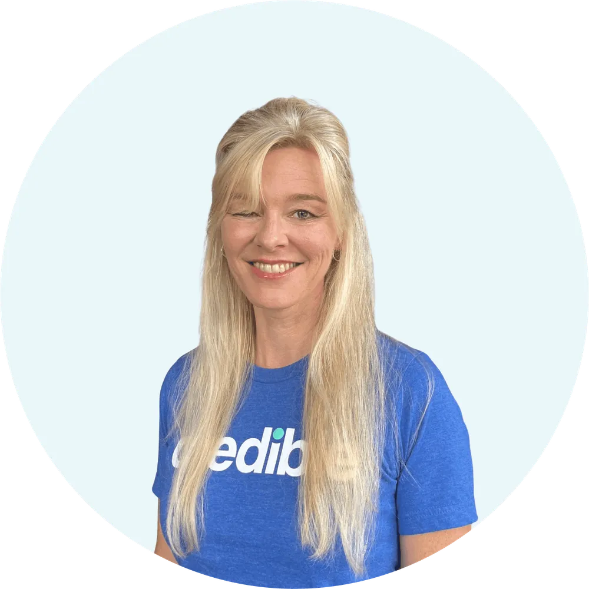
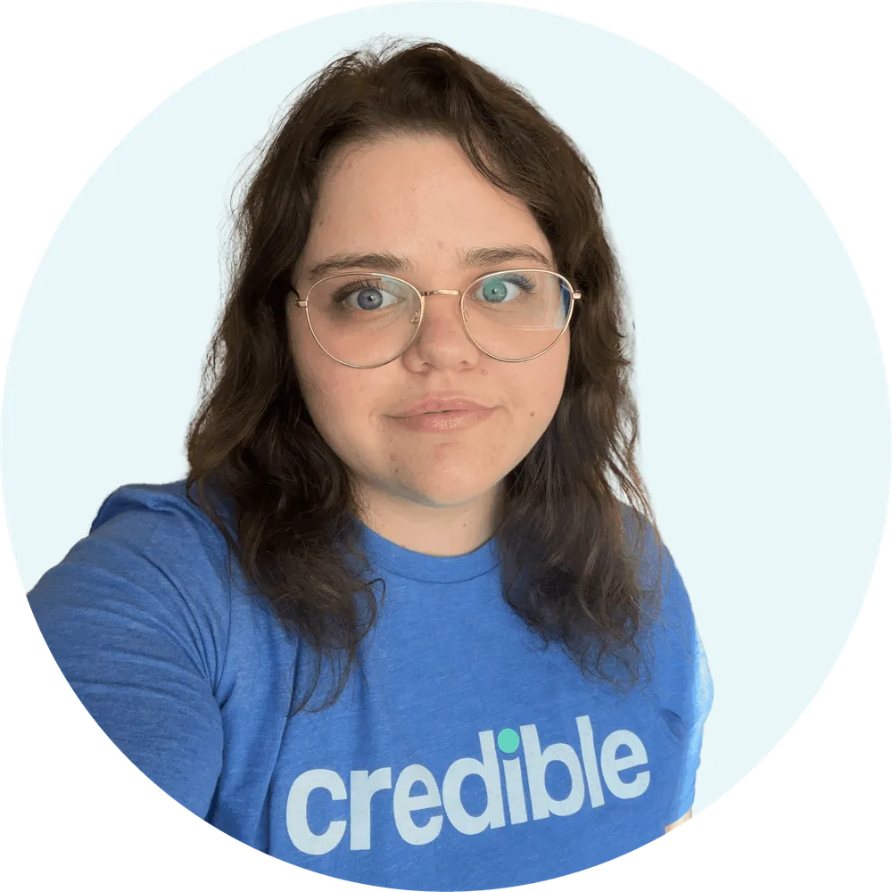

Meet Credible’s Editorial Staff
Credible's editorial team aims to help you understand personal finance topics that are important to you, including student loans, mortgages, and personal loans. Our goal is to provide carefully researched, easily understandable information so that you can make informed decisions about your finances.
Credible is fiercely independent and so are our writers and staff. We're here to help you stay on top of the latest news, trends, concepts, and changes in policy and regulations.
Korrena Bailie

Editorial Director
- 10+ years of content strategy, service journalism and editorial leadership experience.
- Managed editorial teams at Wirecutter, Forbes Advisor, USA TODAY Blueprint, CNN Underscored Money, Credit Karma and Bankrate.
Bio and experience
Korrena Bailie is Credible's editorial director. She leads a talented team of editors who educate readers about life's personal financial decisions on multiple media platforms.
Before joining Credible, Korrena launched financial marketplaces at Wirecutter, USA TODAY and CNN Underscored. She was an editor-in-chief at Forbes Advisor and co-launched Credit Karma's prolific editorial team. She has written and guided coverage across multiple personal finance and lifestyle categories, including consumer finance, credit cards, personal loans, investing, insurance, student loans, consumer goods, health and small business.
Korrena's insights have been featured in a number of publications, including the New York Times and USA TODAY.
Education
Korrena has a bachelor of arts degree in English Literature and a master's degree in Creative Writing from Queen's University, Belfast.
Meredith Mangan

Senior Editor — Personal Loans
- 10+ years of finance editing, writing, and publishing experience.
- Licensed investment advisor representative and insurance agent for four years.
- Avid options trader.
Bio and experience
Meredith Mangan is a senior editor with almost two decades of industry and editorial experience covering banking, credit cards, loans, investing, insurance, and retirement planning. Since 2011, she's helped steer content creation in these areas for major finance outlets, including Investopedia, The Balance Money, and Money Crashers.
Meredith comes to editing from an industry background as a licensed financial advisor and insurance agent, but she's a teacher at heart. She most enjoys helping readers (as well as writers and other editors) navigate complex financial decisions by translating industry jargon into understandable and actionable steps.
Aside from editing, Meredith has been an active options trader since 2014. Someday she hopes to have an official bird-dog-cat-horse-everything rescue to complement the pet menagerie she has at home.
Education
Meredith earned a bachelor's degree in chemistry from New College of Florida.
Richard Richtmyer

Managing Editor — Student Loans
- 25+ years of financial news editing and writing experience.
Bio and experience
Richard Richtmyer is a journalist with more than two decades of experience covering personal finance and other subjects, including student loans, capital markets, investing, real estate, technology, business, government, and politics. He has worked with news organizations ranging from the Associated Press and Bloomberg to CNN and the Anchorage Daily News.
Outside of editing and writing, Richard enjoys long-distance motorcycle touring, strenuous mountain hiking, and practicing old-fashioned strength exercises to stay fit.
Education
Richard earned a bachelor's degree in journalism with a minor in political science from the State University of New York at New Paltz, where he graduated with honors.
Kelly Larsen

Editor — Student Loans
- 12+ years of writing and editing experience.
- Bachelor's degree in English literature.
- Financial editing experience in the digital media and app spaces.
Bio and experience
Kelly Larsen has written and edited content that spans many personal finance topics, including buying a home, saving for retirement, and paying off student loans. She first started learning about the world of finance through her work at Finance101.com. In 2020, Kelly helped launch Paven, a financial well-being app.
Kelly's diverse background includes working as a copywriter for an online driving school, writing a weekly column for an end-of-life blog, and proofreading nonfiction books on topics such as crocheting. When she's not helping others learn more about personal finance, she enjoys playing tennis with her fiancé and hanging out with her dog, Henry.
Education
Kelly holds a bachelor's degree in English literature from San Francisco State University.
Renee Fleck

Editor — Student Loans
- 6+ years of editing experience.
- Bachelor's degree in French and Francophone studies.
- Fluent in Spanish.
Bio and experience
Renee Fleck is a student loans editor with over six years of experience in digital content editing. Before specializing in personal finance, Renee wrote and edited content for Dribbble, a hiring platform for freelance designers and developers. Her work has been featured in Fast Company, Morning Brew, and Sidebar.io, among other online publications.
Renee is fluent in Spanish and French and enjoys traveling to new places. She is currently based in Los Angeles, California.
Education
Renee holds a bachelor's degree in French and Francophone studies with a minor in Portuguese from the University of California, Los Angeles.
Barry Bridges

Editor — Personal Loans
- Former senior editor, Bankrate
- Former editor, The Simple Dollar
Bio and experience
Barry Bridges has been writing and editing content aimed at helping people make good decisions with their finances since 2017. His areas of expertise include personal loans, credit cards, and insurance.
Barry's work has appeared on websites including Bankrate, The Simple Dollar, NASDAQ.com, MarketWatch, and Mattress Advisor. In his first career as a newspaper reporter and editor, he was a two-time winner in the North Carolina Press Association Journalism Contest.
He's also a Certified Sleep Science Coach and a Certified Mind Body Fitness Coach.
Education
Barry has a degree in mass communication from the University of North Carolina at Asheville.
Lisa Davis

Content Production Lead
- Master's degree in communication.
- Wrote content for Texas Lifestyle Magazine, RetailMeNot, and House Digest.
- Finalist of the 2023 APEX Award for Publication Excellence and winner of the 2022 MarCom Platinum Award for Best in Shopping Branded Content.
Bio and experience
Lisa Davis turned her passion for writing into a career when she became an editorial assistant for Texas Lifestyle Magazine. From musicians to movie directors to philanthropists, Lisa has interviewed some of the most interesting people from Texas. She worked as a writer and editor at RetailMeNot, where she offered shopping and savings tips through content and interviews, covered breaking news, and wrote about trends in fashion, beauty, and home design.
In her spare time, Lisa writes for House Digest and loves watching Formula 1, spending time with her kids, and doing Pilates.
Education
Lisa graduated summa cum laude with a bachelor's degree in communication and public relations from Concordia University Texas. She also received a master's degree in communication and a master's certificate in sports communication from Texas Tech University, where she was recognized for academic achievement by Phi Kappa Phi.
Savannah Plasch

Content Producer
- 2+ years as an editorial assistant.
- MFA in creative writing.
Bio and experience
Savannah Plasch is an editorial assistant with over two years of experience. Before joining Credible, she worked as a freelance copywriter focused on medical, personal finance, and e-commerce topics. She was also a volunteer editorial assistant for her school's literary magazine.
Outside of work, Savannah enjoys knitting, hiking with her dogs and partner, and writing. Her short fiction has been published in literary journals like the McNeese Review and UCLA's Westwind.
Education
Savannah received her bachelor's degree in English with a minor in film from the University of California, Los Angeles (UCLA) and an MFA in creative writing from Queens University of Charlotte.